The full walkthrough for the Nintendo Switch 2 remake — every dungeon, every secret, and every last thing you need for 100%.
★ 100% GUIDE ★KID FRIENDLYSWITCH 2 REMAKE
HOW TO USE THIS GUIDE
Hi, hero! This guide will help you beat the whole game and find every secret. You play as Link, a boy who must save the land of Hyrule from the bad guy, Ganondorf.
How to read it: Play one part at a time. Do the steps in order. If you get stuck, look for the yellow KID TIP boxes. They hold the good tricks!
Tap the ☰ MENU button at the top left any time to jump to a new part. The menu slides out from the left. Tap ✕ to hide it.
Check off boxes as you find things. The guide will save your checks on your tablet, so you can close it and come back later.
Your 100% progress: 0%
KID TIP! The game has two parts. First you play as Young Link (a kid). Then you pull the Master Sword and grow up into Adult Link. Some things can only be done as a kid. Some can only be done as a grown-up. This guide tells you which is which!
CONTROLS & NEW STUFF
The remake looks brand new, but the game is the same great adventure from 1998. Here is what is new on Switch 2:
Quest Log: Press pause to see what to do next. Stuck? Check the log!
Sing with your voice: You can hum or play the ocarina songs with the mic. Or just press the buttons like always.
Jump and dash: Link can now jump and dash on his own. No more waiting for the game to do it for you.
New camera: You can move the camera to look all around.
Voices and music: The big story scenes now have real voices and a full band playing the music.
Hall of Fallen Heroes: A new place to see the big bad guys you beat.
THE BUTTONS YOU NEED MOST
Z-Target (hold L): Lock on to a bad guy or a friend. This is the most key move in the game!
Sword: Press B to swing. Hold B, then let go for a spin attack.
Shield: Hold R to block. Always block when a bad guy is about to hit you.
Roll: Push the stick and press A to roll. Rolling is fast!
Ocarina: Press the ocarina button, then play songs with the buttons.
Talk: Walk up to a person and press A.
KID TIP! Save a lot! Open the pause menu and save any time you are outside a dungeon. If you lose a big fight, you will be glad you saved. Also: some shop prices changed in the remake. If a price in this guide looks different in your game, trust your game!
📺 Watch: Opening Cutscene by timforsyth15 (~5 min) — the story begins! Watch on YouTube
📺 Watch: Full Game 100% Walkthrough by RetroArchive (~18 hours, no talking) — the whole game, start to finish. Jump to any part you need! Watch on YouTube
🎬 Want to watch the whole story like a movie? Here is every cutscene in one video (no talking, remake footage).
ALL 13 SONGS
You play songs on your ocarina. Each song does magic. Learn them all for 100%! Hold ZL to open your songbook and see the songs you know.
Zelda's Lullaby — Zelda teaches you at Hyrule Castle. Opens magic doors and changes the Water Temple water.
Epona's Song — Malon teaches you at Lon Lon Ranch. Calls your horse, Epona.
Saria's Song — Saria teaches you in the Lost Woods. Lets you talk to Saria any time.
Sun's Song — Play it in the Royal Family's Tomb in Kakariko. Turns night to day and day to night.
Song of Time — Zelda teaches you in the Temple of Time. Moves big blue blocks and opens the Door of Time.
Song of Storms — The windmill man in Kakariko teaches you. Makes it rain and fills the well.
Minuet of Forest — Sheik teaches you. Warps you to the Forest Temple.
Bolero of Fire — Sheik teaches you. Warps you to the Fire Temple.
Serenade of Water — Sheik teaches you. Warps you to the Water Temple.
Requiem of Spirit — Sheik teaches you. Warps you to the Spirit Temple.
Nocturne of Shadow — Sheik teaches you. Warps you to the Shadow Temple.
Prelude of Light — Sheik teaches you. Warps you to the Temple of Time.
Scarecrow's Song — Make up your own 8-note tune! Teach it to the scarecrow at Lake Hylia as a kid, then play it again as a grown-up. It calls Pierre the scarecrow, who you can Hookshot to.
KID TIP! Warp songs are your fast travel. Stuck far from a temple? Play its warp song and zoom — you will land right at the door!
1. KOKIRI FOREST
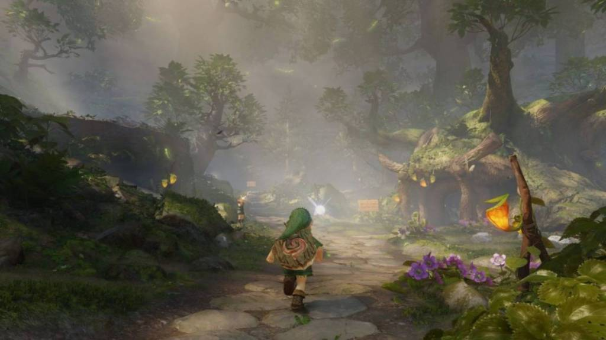
Your home! A small village in the woods.
Goal: Get a sword and a shield, then go see the Great Deku Tree.
Wake up! Navi the fairy will fly in and talk to you. Go outside your tree house.
Find Saria (your friend in green) and talk to her. She tells you to see the Great Deku Tree.
Go to the Forest Training Center (the small hole in the hill near the pond). Crawl through it. Open the chest to get the Kokiri Sword!
Buy the Deku Shield in the shop for 40 rupees. Need cash? Cut grass and smash pots — rupees pop out!
Walk up to the big tree with the face. That is the Great Deku Tree. He will give you your first big job.
KID TIP! Before you leave, play with the rocks near your house. Lift them! One hides 20 rupees. Also, talk to all your friends. Mido is grumpy, but he is funny.
YOU GET: Kokiri Sword, Deku Shield
WHILE YOU'RE HERE! ⭐
• Skulltulas: 2 kid Skulltulas hide in Kokiri Forest. Check the trees at night!
• On your way to Saria: In the Lost Woods, play the ocarina game with the Skull Kid (Heart Piece #15). After you learn Saria's Song, play it for the second Skull Kid (Heart Piece #16).
• Magic Beans: Later, buy Magic Beans from the bean seller in Zora River. Plant them in soft dirt as a kid — you ride the big plants as a grown-up!
2. INSIDE THE DEKU TREE
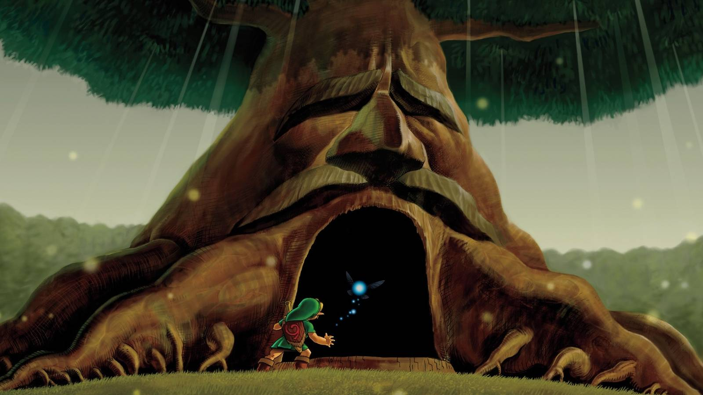
The first dungeon! It is dark and full of spider webs.
Goal: Beat the big spider queen and get the green stone.
Go in the tree's big mouth. Kill the little spiders (called Skullwalltulas) on the walls.
Climb the vines up to the top floor. Watch out for the big spiders on the walls — hit them with your sword.
Find the chest with the Fairy Slingshot. Now you can shoot seeds far away!
Use the slingshot to shoot the big eye above the door. The door will open.
Light a Deku Stick on fire and burn the spider webs on the floor. Jump down the hole.
At the very bottom, you will see the big boss: Queen Gohma.
BOSS: QUEEN GOHMA She is a giant spider with one big red eye. Wait for her eye to turn red. Shoot it with your slingshot! Then run up and hit her with your sword. Do it 3 times and she is done. You did it!
YOU GET: Fairy Slingshot, Heart Container, Kokiri's Emerald (the green stone)
WHILE YOU'RE HERE! ⭐
• Skulltulas: 4 gold spiders hide inside the Deku Tree. Grab them now while you are here — check the walls and the high rooms!
KID TIP! Deku Sticks break fast! Light one, then run to the web right away. If it goes out, light a new one.
3. HYRULE CASTLE
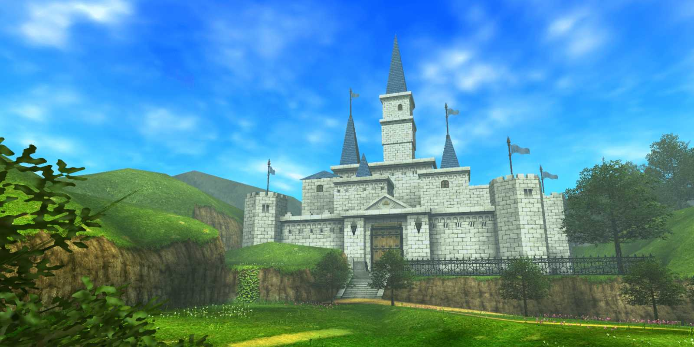
The big white castle in the middle of Hyrule Field.
Goal: Meet Princess Zelda and learn her song.
Leave the forest and cross Hyrule Field. It is big! Run straight to the castle town. At night, scary skeletons come out — run fast or wait for day.
In the market, find the Happy Mask Shop and the shops. Buy what you need.
Go to the castle. The guards will not let you in the front. Sneak around the side!
Hide behind bushes and walls. If a guard sees you, he will toss you out and you must start the sneak again.
Climb the vines on the wall and drop into the yard. Meet Princess Zelda! She tells you about Ganondorf and gives you Zelda's Letter.
She teaches you about Ganondorf. Then her guard Impa teaches you Zelda's Lullaby. This song opens magic doors all over the game!
KID TIP! Talk to the man in the market who loves masks. He will help you later. And do not forget to play the Sun's Song trick: play Zelda's Lullaby near the guards to make them sleepy? No — just sneak slow and low!
YOU GET: Zelda's Letter, Zelda's Lullaby
WHILE YOU'RE HERE! ⭐
• Heart Piece #4: At night, lead the lost white dog in the back alley to the lady calling his name.
• Heart Piece #5: Bombchu Bowling — win 3 times in a row (10 rupees a game).
• Heart Piece #6: Treasure Box Shop — needs the Lens of Truth, so come back later as a grown-up.
• Bottle #1: The Potion Shop gives you a bottle the first time you walk into town!
• Masks: The Happy Mask Shop is open. Borrow the Keaton Mask and sell it to the guard at Death Mountain.
• Skulltula: 1 in Castle Town at night.
📺 Watch: Meeting Princess Zelda by Pretty Angel Plays (remake footage — the meeting happens partway through this episode). Watch on YouTube
4. KAKARIKO VILLAGE
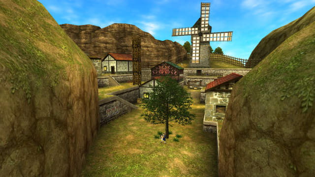
A quiet village with a windmill, a graveyard, and lots of secrets.
Goal: Meet the people, get new gear, and get ready for Death Mountain.
Go east from Hyrule Field to Kakariko Village. Talk to everyone. The village has lots of secrets!
Climb the watchtower and talk to the man up top. He gives you a hint about the well.
Go to the graveyard. Pull the grave stones to find rupees and a Heart Piece. (See the Heart Piece list for the exact one!)
Play Zelda's Lullaby at the big Triforce mark on the floor of the Royal Family's Tomb to open it. Inside, play the Sun's Song to learn it!
Buy the Hylian Shield in the shop if you want a strong shield. Save up your rupees first!
Head up the trail to Death Mountain. A big rock blocks the path — play Zelda's Lullaby to open the gate.
KID TIP! Kakariko is full of cuccos (chickens). Do NOT hit them! If you hit one too much, a whole flock will attack you. It is funny, but it hurts.
YOU GET: Sun's Song, Hylian Shield (if you buy it)
WHILE YOU'RE HERE! ⭐
• Heart Pieces #7 and #8: Rooftops — glide with Cuccos. #11 and #12: In the graveyard.
• Plant a Magic Bean NOW in the soft dirt by the graveyard wall — as a grown-up you ride it to Heart Piece #13!
• Bottle #2: Catch Anju's 7 runaway Cuccos and put them back in the pen.
• Skulltulas: 6 in the village, 2 in the graveyard. (The 3 in the Bottom of the Well need the Song of Storms — learn it as a grown-up, then come back as a kid!)
5. DODONGO'S CAVERN
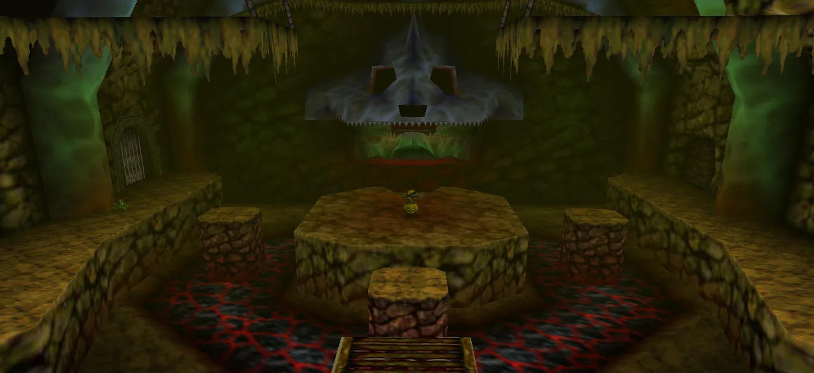
A hot, rocky cave full of bombs and lava.
Goal: Beat King Dodongo and get the red stone.
Climb Death Mountain to Goron City. Talk to Darunia, the Goron boss. He is sad. Play Saria's Song for him — it makes him dance!
Darunia opens Dodongo's Cavern for you. Go in!
Find the chest with the Bomb Bag. Now you can carry bombs! Use bombs to blow up cracked walls and rocks.
Push the big block in the main room to open new paths. Light the torches with a Deku Stick to open doors.
Keep going up. At the top, you will find King Dodongo.
BOSS: KING DODONGO He is a giant lizard that rolls at you! When he opens his big mouth, throw a bomb in. BOOM! Then hit him with your sword while he is dizzy. Do it 3 times. Watch out for his fire breath — hide behind the pillars.
YOU GET: Bomb Bag, Heart Container, Goron's Ruby (the red stone)
KID TIP! Bombs can hurt you too! Throw them, then run back. And if you run out of bombs, look for bomb flowers — pick them up and throw them.
WHILE YOU'RE HERE! ⭐
• Heart Piece #18: Goron City spinning pot — throw a bomb in!
• Plant Magic Beans NOW: one at the top of Death Mountain Trail (#17) and one on the crater floor (#21). You ride them as a grown-up.
• Heart Pieces #19 and #20: In the crater — climb down the net, and buy one from the Business Scrub for 100 rupees.
• Skulltulas: 5 in Dodongo's Cavern (4 as a kid, 1 as a grown-up).
6. JABU-JABU'S BELLY
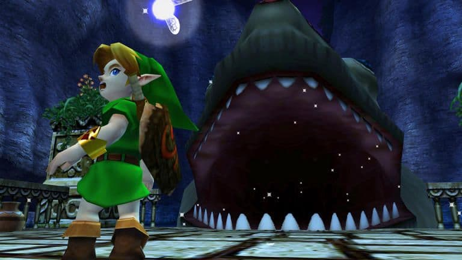
Yes — you go INSIDE a giant fish!
Goal: Save Princess Ruto and get the blue stone.
Go to Zora's Domain (up the river). At the top of the waterfall, play the Diving Game: dive down and grab all the rupees the man throws in. Win and you get the Silver Scale. Now you can dive deep!
Swim through the dark tunnel at the bottom of Zora's Domain. It comes out in Lake Hylia. Dive to the lake floor and pick up the bottle with Ruto's Letter in it.
Take the letter to King Zora in Zora's Domain (up the river). He will move and let you into the big fish, Jabu-Jabu!
Inside the fish, find Princess Ruto. She is mad at you. Pick her up and carry her! (Press A near her to pick her up. Put her down with A when you need to fight.)
Find the chest with the Boomerang. It is your new best toy — it can hit switches far away!
Carry Ruto to the top room. She will go up to the boss room. Follow her!
BOSS: BARINADE He is a big jellyfish with electric balls around him. Throw your Boomerang to knock the electric balls off. Then hit his body with your sword or Boomerang. When he sticks to the roof, throw the Boomerang at him. Keep going until he pops!
YOU GET: Boomerang, Silver Scale, Heart Container, Zora's Sapphire (the blue stone)
KID TIP! Ruto is heavy! If you put her down, she stays where you left her. If you fall in a hole, she comes back to the start room. Do not panic — just go get her again.
WHILE YOU'RE HERE! ⭐
• Heart Piece #26: Light all the torches in Zora's Domain.
• Heart Pieces #22 and #23: Glide with Cuccos along Zora River. (#24 and #25, the frog ones, need the Song of Storms — come back as a kid after you learn it as a grown-up!)
• Heart Piece #29: Fish at the Lake Hylia fishing pond and catch a big fish.
• Plant a Magic Bean NOW by the Lakeside Lab for Heart Piece #31 (grown-up).
• Skulltulas: 4 inside Jabu-Jabu, 4 along Zora River, 3 at Zora's Fountain, 5 at Lake Hylia.
• Bottle #4: Ruto's Letter — you need it for the story!
📺 Watch: Jabu-Jabu's Belly Walkthrough by Gamer Guru (~25 min, remake) — shows Ruto and the Boomerang. Watch on YouTube
7. TEMPLE OF TIME
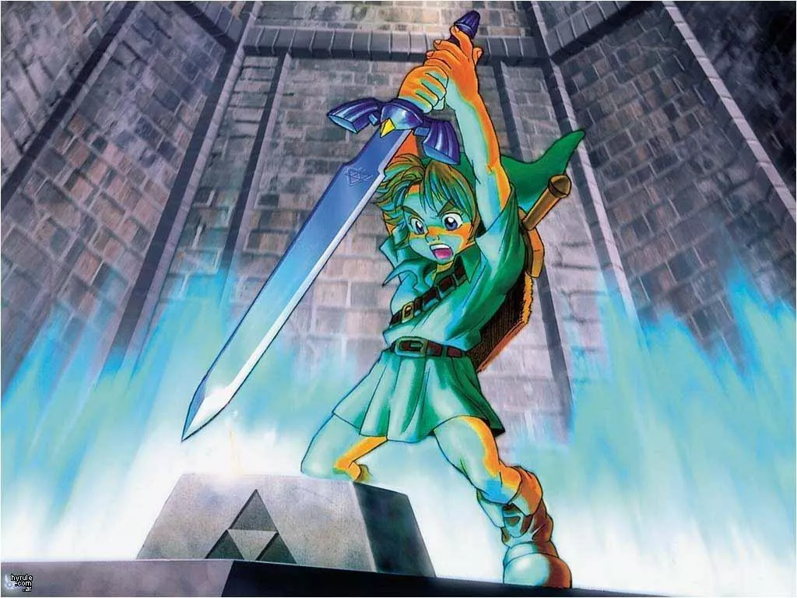
The big moment! You pull the Master Sword and grow up!
You now have all 3 magic stones: green, red, and blue. Go back to Hyrule Castle Town.
Oh no! Ganondorf is attacking! Zelda and her guard Impa run away on a horse. Zelda throws something into the moat — the Ocarina of Time! Fish it out.
Go to the Temple of Time (north of the market). Stand on the mat and play the Song of Time. The Door of Time opens!
Walk in and pull the Master Sword from its stone. FLASH! You wake up 7 years later — you are all grown up!
A kind man named Rauru tells you what happened: Ganondorf took over Hyrule while you slept. Now you must wake the 5 Sages and stop him.
Sheik teaches you the Prelude of Light. This song warps you back to the Temple of Time any time.
KID TIP! You can go back to being a kid! Put the Master Sword back in its stone to turn young again, and pull it out to grow up. Some secrets need Young Link. Some need Adult Link. You will switch a lot!
YOU GET: Ocarina of Time, Master Sword, Prelude of Light
BEFORE YOU GROW UP — CHECKLIST! ⭐
Once you pull the Master Sword, you can still go back to being a kid. But some kid things are easy to forget. Make sure you did these as a kid:
• Planted all 5 Magic Beans (Graveyard, Death Mountain Trail, Death Mountain Crater, Lake Hylia, Desert Colossus).
• Taught your Scarecrow's Song to the scarecrow at Lake Hylia (you need it as a grown-up!).
• Got Epona's Song from Malon at Lon Lon Ranch.
• Grabbed the kid Heart Pieces and Skulltulas in each place — the green boxes in this guide tell you which ones!
📺 Watch: The New Master Sword Cutscene by Hoxi (~4 min, remake) — the big moment, brand new in the remake! Watch on YouTube
8. FOREST TEMPLE
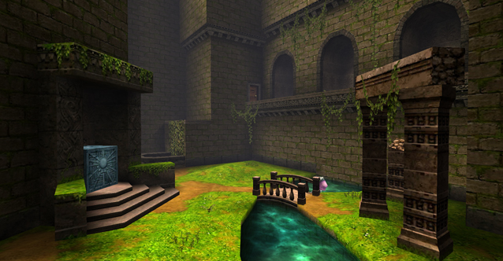
An old temple in the woods where the halls twist and turn.
Goal: Wake Saria, the Sage of Forest. The temple is twisty — the halls turn and change!
Go back to Kokiri Forest. It is full of monsters now! Sheik meets you outside and teaches you the Minuet of Forest.
Enter the Forest Temple. Fight the Stalfos (skeleton knights) in the first big room.
Find the chest with the Fairy Bow. Now you can shoot arrows!
The temple has 4 Poe sisters (ghosts) hiding in paintings. Find each Poe and beat her to light a torch. Light all 4 torches to open the boss door.
Twisted halls: shoot the eye switches to untwist the halls and open new doors. Use your Hookshot to cross gaps.
At the end, face Phantom Ganon.
BOSS: PHANTOM GANON He jumps out of paintings on his horse! Watch the paintings — the real Ganon comes out of the one that looks right. Shoot him with your bow as he rides at you. If you shoot the fake one, it will hit you back. When he falls off his horse, hit him with your sword. Do it 3 times!
YOU GET: Fairy Bow, Heart Container, Forest Medallion, Minuet of Forest
KID TIP! The Poe sisters are Meg, Joelle, Beth, and Amy. Each one hides in a different part of the temple. If you lose track, check your Quest Log!
WHILE YOU'RE HERE! ⭐
• Skulltulas: 5 in the Forest Temple. Grab them as you go — the ones behind the twisted halls are easy to miss!
📺 Watch: Forest Temple Walkthrough by Austin John Plays (~25 min, remake, with talking) — great if the twisty halls confuse you. Watch on YouTube
9. FIRE TEMPLE
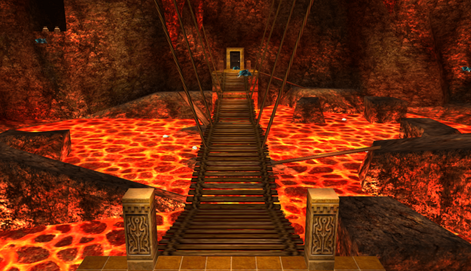
Hot, hot, hot! Bring a Goron Tunic so the fire does not hurt you.
Goal: Wake Darunia, the Sage of Fire. Free all the Gorons locked in cells!
Go to Goron City on Death Mountain. Buy the Goron Tunic in the shop and put it on! It costs a lot of rupees, so save up first.
Sheik meets you and teaches you the Bolero of Fire.
Enter the Fire Temple in the volcano crater. It is a maze of hot rooms!
Free the Gorons in the cells. Each one gives you a tip or a key. You need the Small Keys to open locked doors.
Find the chest with the Megaton Hammer. It is super heavy and smashes rusty switches and rocks!
Use the Hammer on the big rusty switch to open the boss door. Face Volvagia.
BOSS: VOLVAGIA He is a giant fire dragon that pops out of lava holes! Stand near a hole and wait. When he pops up, hit him with your Hammer. Then slash him with your sword. Do not stand in the lava! When he flies, run away from his fire rocks.
YOU GET: Megaton Hammer, Goron Tunic, Heart Container, Fire Medallion, Bolero of Fire
KID TIP! The Fire Temple has a lot of locked doors. If you run out of keys, you missed a Goron cell. Go back and look for cells you did not open yet!
WHILE YOU'RE HERE! ⭐
• Skulltulas: 5 in the Fire Temple. Check every room — some hide behind the fire walls!
• Grown-up Heart Pieces: Ride the bean plants you planted as a kid — #17 on Death Mountain Trail and #21 in the crater.
📺 Watch: Fire Temple Walkthrough by Sirloin (~65 min, remake, no talking). Watch on YouTube
10. WATER TEMPLE
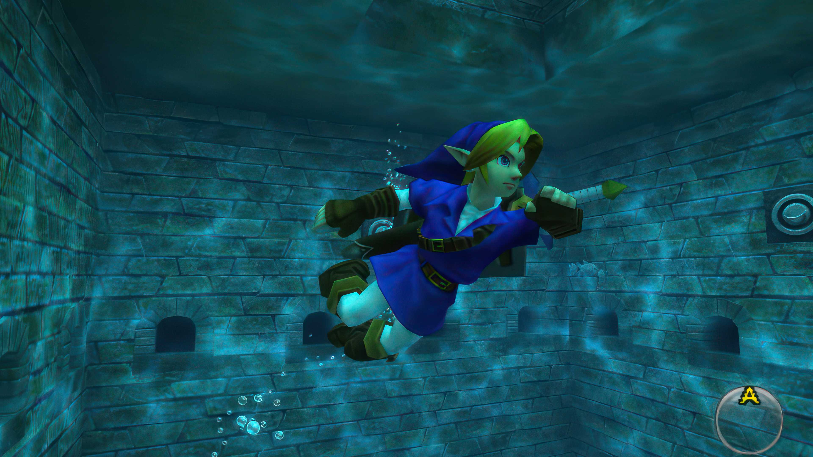
The hardest temple in the game — take your time!
Goal: Wake Ruto, the Sage of Water. This is the hardest temple — take your time!
Go to Lake Hylia. Sheik teaches you the Serenade of Water. Put on your Iron Boots (find them in a chest in the temple) to walk on the lake floor.
Enter the Water Temple. The water level goes up and down. Play Zelda's Lullaby at the blue Triforce marks to change the water level. Low, middle, high — each level opens new doors!
Find the Longshot after the Dark Link fight. It reaches twice as far as your Hookshot.
Fight Dark Link — a shadow copy of you! He copies your moves. Best trick: use the Megaton Hammer or Din's Fire. Or just keep hitting him with your sword and do not stop.
Use the Longshot to hit the eye switch high up in the main room. This opens the boss door.
Face Morpha.
BOSS: MORPHA She is a giant water blob with a little ball inside. Use your Longshot to pull the ball out of the water. Then hit the ball with your sword! When she grabs you, she will drag you under — break free fast. Do it 3 times.
YOU GET: Iron Boots, Longshot, Heart Container, Water Medallion, Serenade of Water
KID TIP! Stuck in the Water Temple? Check the water level! Most stuck spots are fixed by changing the water to low, middle, or high. And wear the Iron Boots to sink, then take them off to float back up.
WHILE YOU'RE HERE! ⭐
• Skulltulas: 5 in the Water Temple. Check the rooms at every water level!
• Grown-up Heart Pieces: #27 and #28 at Zora's Fountain (iceberg + underwater cave), #30 and #31 at Lake Hylia (lab diving with the Golden Scale + the bean tower).
📺 Watch: Water Temple Walkthrough by Gamer Guru (~30 min, remake) — every puzzle and all 5 Skulltulas. Stuck? Watch this one! Watch on YouTube
11. SHADOW TEMPLE
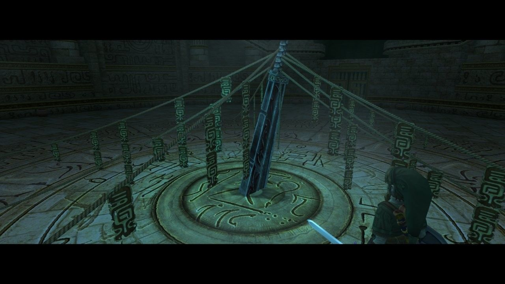
Spooky! Full of fake walls and hidden rooms.
Goal: Wake Impa, the Sage of Shadow. This temple is spooky and full of fake walls!
First, you need the Lens of Truth. As a grown-up, go to the well in Kakariko Village. Play the Song of Storms to drain the well, then climb down into the Bottom of the Well. Beat the mini-dungeon and get the Lens of Truth from the chest.
Go to the graveyard in Kakariko. Play Zelda's Lullaby at the big tomb to open the Shadow Temple.
Sheik teaches you the Nocturne of Shadow before you go in.
Use the Lens of Truth to see hidden things: fake walls, hidden floors, and invisible bad guys!
Find the Hover Boots in a chest. They let you walk on air for a short time — great for crossing big gaps!
Ride the boat across the river of the dead, then face Bongo Bongo.
BOSS: BONGO BONGO He is a giant ghost with big hands and one big eye — and you can only see him with the Lens of Truth! Shoot his hands with your bow to stun them, then shoot his big eye. When he falls down, hit him with your sword. Watch out for his drum beat — it shakes the whole room!
YOU GET: Lens of Truth, Hover Boots, Heart Container, Shadow Medallion, Nocturne of Shadow
KID TIP! The Lens of Truth uses magic. If your magic runs out, look for green magic jars. And always check fake walls with the Lens — there are secret rooms with treasure!
WHILE YOU'RE HERE! ⭐
• Skulltulas: 5 in the Shadow Temple. Use the Lens of Truth to spot the hidden ones!
• Grown-up Heart Pieces: #9 (windmill, through Dampé's tunnel) and #14 (Dampé's race — Hookshot needed) in Kakariko, plus #13 (ride the graveyard bean plant you planted as a kid).
📺 Watch: Shadow Temple Walkthrough by Gamer Guru (~35 min, remake) — every puzzle and all 5 Skulltulas. Watch on YouTube
12. SPIRIT TEMPLE
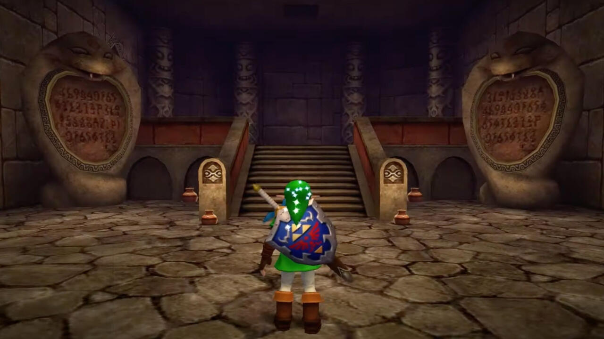
A desert temple you explore as both a kid and a grown-up.
Goal: Wake Nabooru, the Sage of Spirit. You need BOTH Young Link and Adult Link for this one!
Go to the Desert Colossus in the Haunted Wasteland (west of Gerudo Valley). Sheik teaches you the Requiem of Spirit.
First, go in as Young Link (put the Master Sword back in the Temple of Time). Climb up and find the chest with the Silver Gauntlets. They let you lift big gray rocks!
Now go back as Adult Link. Use the Silver Gauntlets to move the big block and open the way.
Find the Mirror Shield in a chest after beating an Iron Knuckle (a knight in armor). The Mirror Shield can bounce light and magic!
Use the Mirror Shield to bounce light onto the sun faces on the walls. This opens doors.
Face the twin witches: Twinrova.
BOSS: TWINROVA Two twin witches — one shoots fire, one shoots ice! Hold up your Mirror Shield to catch one's magic, then it will bounce and hit the other twin. When they join into one big witch, keep blocking with the Mirror Shield to soak up her magic, then let it go back at her. Then slash with your sword!
YOU GET: Silver Gauntlets, Mirror Shield, Heart Container, Spirit Medallion, Requiem of Spirit
KID TIP! The Iron Knuckle is slow but strong. Hit him, then back off fast. When his armor falls off, he gets fast — be ready to run and roll!
WHILE YOU'RE HERE! ⭐
• Skulltulas: 5 in the Spirit Temple — 3 as a kid, 2 as a grown-up! Do the kid side first, then come back grown-up.
• Plant a Magic Bean at the Desert Colossus as a kid for Heart Piece #36 (shoot it off the arch with your Bow as a grown-up).
• Heart Pieces #34 and #35 are in Gerudo's Fortress (Scarecrow chest + Horseback Archery) — do them as a grown-up before the Spirit Temple.
• Skulltulas: 4 in Gerudo Valley, 2 in the Fortress, 3 at the Desert Colossus.
📺 Watch: Spirit Temple Walkthrough by Austin John Plays (~30 min, remake, with talking) — clear and easy to follow. Watch on YouTube
13. GANON'S CASTLE & FINAL BOSS
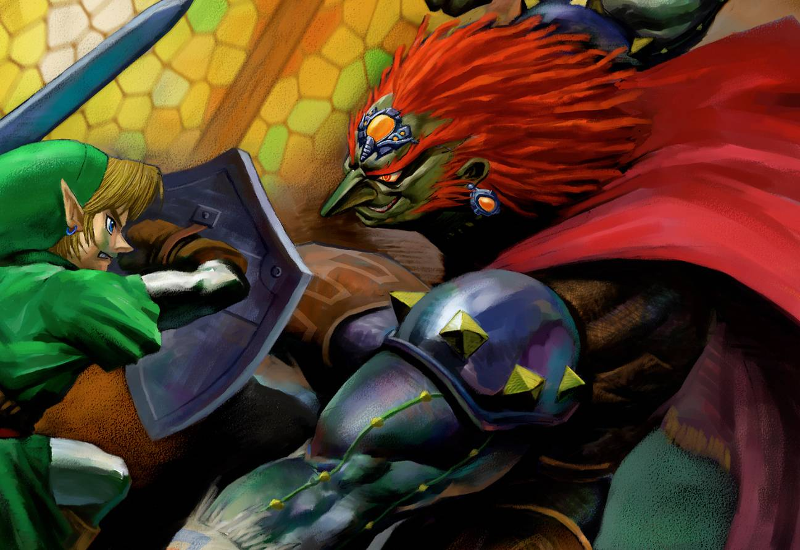
The last fight! You can do it, hero!
Goal: Break the 6 magic walls, beat Ganondorf, and save Hyrule!
Go to Hyrule Castle (it is now Ganon's Castle). You need the Golden Gauntlets — find them in a chest inside the castle. They let you lift the huge black rocks blocking the way.
Inside, there are 6 magic walls: Light, Forest, Fire, Water, Shadow, and Spirit. Each one is a mini-test. Break all 6!
Climb to the top tower. Ganondorf is waiting, playing his organ.
BOSS: GANONDORF He shoots big magic balls at you! Hit the ball back at him with your sword (like tennis) or catch it in an empty bottle and throw it back. When he is stunned, hit him with your sword or shoot him with a Light Arrow. Do it until he falls, then hit him with all you have!
After Ganondorf falls, the castle starts to fall down! Run out fast — follow Zelda and do not stop!
FINAL BOSS: GANON Outside, Ganondorf turns into a giant pig beast named Ganon! He is big and strong. Hit his tail with the Master Sword (or the Biggoron's Sword if you have it). When Zelda holds him still with her light, run up and give him the final hit with the Master Sword!
YOU WIN! You saved Hyrule! Watch the happy ending. You are a true hero, Link!
KID TIP! Before the final fight, stock up! Fill your bottles with fairies (catch them in bottles at fairy fountains). If you fall in a fight, a fairy will bring you back to life. Fairies are the best!
LAST CHANCE! ⭐
• Skulltula: 1 in Ganon's Castle — the very last one!
• Golden Gauntlets + Double Defense: Get the Great Fairy of Courage gift outside the castle before you go in.
• Check the tables page (Hearts & Skulltulas) for any Heart Pieces or Skulltulas you still miss — grown-up ones #9, #13, #14, #17, #21, #27, #28, #30, #31, #34, #35, #36 are the ones most people forget!
📺 Watch: Final Boss & 100% Ending! by AbdallahSmash (remake) — Ganondorf, Ganon, the ending and the credits. Watch on YouTube
❤️ ALL 36 HEART PIECES
4 Heart Pieces = 1 whole new Heart Container. Find all 36 and you get 9 extra hearts! With the 8 boss Heart Containers, that is 20 hearts in all — the max!
How to read this list: 👦 = you pick it up as Young Link (kid). 🧑 = you pick it up as Adult Link (grown-up). Some kid pieces need a grown-up step first (like reading a Fairy's Thought) — the steps tell you which! Some need magic beans: plant a bean in soft dirt as a kid, then ride the big plant as a grown-up!
📋 Want to sort and filter them? See the full Heart Pieces table — every piece, with checkboxes!
1. Hyrule Field — Scrub Grotto 👦 First, as a grown-up, read the Fairy's Thought by a tree in Hyrule Field to learn a secret word. Then as a kid, drop into the round hole by the moat near the castle town, say the word, and pay 100 rupees.
2. Hyrule Field — Canyon Chest 👦 First, as a grown-up, read the Fairy's Thought by the chest in the red-rock canyon (west Hyrule Field). Then open the chest as a kid.
3. Lon Lon Ranch — Tower Crates 👦 In the old stone building in the south-west corner, push the crates and crawl through to the round stone room.
4. Castle Town — Lost Dog 👦 At night, find the small white dog in the back alley and lead him to the lady calling his name.
5. Castle Town — Bombchu Bowling 👦 10 rupees a game. Win 3 times in a row! 1st win = Bombchus, 2nd win = Biggest Bomb Bag, 3rd win = Heart Piece.
6. Castle Town — Treasure Box Shop 👦 At night. First get the Lens of Truth as a grown-up, then come back as a kid. Pay 10 rupees, use the Lens to find the key chest in each of 5 rooms. The prize room chest has the piece.
7. Kakariko — Rooftop Cucco 👦 Carry a Cucco up the stairs past the well, climb the ladder, grab a second Cucco and glide onto the purple roofs. The red-haired man by the far wall gives you the piece.
8. Kakariko — Owl Ride Rooftop 👦 Talk to the big owl at the top of Death Mountain again and take his ride. He drops you on the blue roofs — cross to the red-tiled roof by the cow barn.
9. Kakariko — Windmill 🧑 Go through Dampé's tunnel from the graveyard to the windmill's top floor. The piece is on the walkway around the big shaft.
10. Kakariko — House of Skulltula 👦🧑 Free all 50 of the cursed man's sons (50 Gold Skulltula tokens). He thanks you with a Heart Piece.
11. Graveyard — Dampé's Digging 👦 At night, pay Dampé 20 rupees. The piece is in his 4th dirt pile — grab it before the light goes out!
12. Graveyard — Tombstone Chest 👦🧑 Pull back the bottom grave stone in the right-most row, drop in the hole, and open the chest at the end.
13. Graveyard — Magic Bean Ride 🧑 Plant a Magic Bean in the soft dirt by the graveyard wall as a kid. As a grown-up, ride the big plant over the wall to the piece on a block.
14. Graveyard — Dampé's Race 🧑 With the Hookshot, drop into Dampé's grave and race him in 1 minute. Follow his lantern! The chest at the end has the piece.
15. Lost Woods — Skull Kid Game 👦 Stand on the short stump in the Skull Kid's clearing and copy the tunes he plays. Win the 3rd (longest) round!
16. Lost Woods — Saria's Song 👦 After you learn Saria's Song, play it for the second Skull Kid on a stump deeper in the woods. He calls you a friend and gives you the piece.
17. Death Mountain Trail — Magic Bean 🧑 Plant a Magic Bean in the soft dirt at the top of the trail as a kid. As a grown-up, ride the plants up past the rope bridge to a nook in the rock wall.
18. Goron City — Spinning Pot 👦 Throw a bomb (or a lit Deku Stick) into the big spinning pot on the top floor to stop it. The piece pops out!
19. Death Mountain Crater — Hidden Nook 👦 Climb down the net hanging down the crater wall. The hidden nook at the bottom has the piece.
20. Death Mountain Crater — Business Scrub 👦 Bring 100 rupees. Knock the Business Scrub out of its plant in the south crater and buy the piece for 100 rupees.
21. Death Mountain Crater — Magic Bean 🧑 Plant a Magic Bean on the crater floor as a kid (warp there with the Bolero of Fire). As a grown-up, ride the plants to the small lava island with the piece.
22. Zora River — Cucco Islets 👦 Carry a Cucco and glide from islet to islet across the river. The chain ends at the piece.
23. Zora River — Cucco Ledge 👦 Carry a Cucco along the cliff path and across the stone bridge, then along the narrow shelf past the stream.
24. Zora River — Frogs, Song of Storms 👦 First learn the Song of Storms as a grown-up. Then as a kid, play it for the five frogs on stumps by the waterfall pool. They drop the piece!
25. Zora River — Frog Bug Game 👦 After the frog piece, play the Song of Time when the frogs ask for one more song, then play notes while they catch bugs until they are full.
26. Zora's Domain — Torch Chest 👦 Light a Deku Stick on a burning torch, then light every unlit torch in the dark hall. A chest pops up at the end!
27. Zora's Fountain — Iceberg 🧑 Hop across the ice blocks to the far ledge.
28. Zora's Fountain — Underwater Cave 🧑 Dive from the open water near the stone pillar into the dark cave under the ice. The piece is at the end.
29. Lake Hylia — Fishing Pond 👦 Pay 10 rupees for the rod and catch a big fish (about 56 cm). The fishing man gives you the piece. (Do not use the sinking lure — those fish do not count!)
30. Lake Hylia — Lab Diving 🧑 With the Golden Scale, dive to the grate at the bottom of the lab's deep tank. The scientist gives you the piece when you come up.
31. Lake Hylia — Tower 🧑 Plant a Magic Bean by the Lakeside Lab as a kid. As a grown-up, ride the plant across the dry lake bed to the stone tower and climb to the top.
32. Gerudo Valley — Cucco Ledge Chest 👦 Carry a Cucco and jump across the ravine to the chest in the south-west. (Grown-ups can jump from the north cliff and Hookshot across.)
33. Gerudo Valley — Waterfall Cliff 👦 Drop into the water on the north side, swim to shore, and follow the path behind the waterfall to the end.
34. Gerudo's Fortress — Scarecrow Chest 🧑 Play your Scarecrow's Song to call Pierre on the fortress roof, Hookshot to him, and open the rooftop chest.
35. Gerudo's Fortress — Horseback Archery 🧑 With Epona and the Fairy Bow, score 1,000+ points at Horseback Archery (30 rupees a try).
36. Desert Colossus — Magic Bean 🧑 Plant a Magic Bean at the Colossus as a kid (warp there with the Requiem of Spirit). As a grown-up, ride the plant up and shoot the piece off the arch in front of the Spirit Temple with your Bow.
KID TIP! Your map counts Heart Pieces in each place! Open the map and look at the numbers. If a place says 3 of 4, you missed one there. Also, you must pick up Heart Pieces with your hands (press A) — the Boomerang and Hookshot can not grab them in the remake.
🕷️ ALL 100 GOLD SKULLTULAS
Gold Skulltulas are little gold spiders. Kill one and grab its token. Take tokens to the House of Skulltula in Kakariko Village to free the cursed family and win prizes!
KID TIP! Most outside spiders only come out at night. Play the Sun's Song to make it night. Dungeon spiders are out any time. Some hide in trees — hit the tree or run into it! Some hide under soft dirt — drop a bug from a bottle on the dirt patch and the spider pops out. Listen for their scratchy sound!
PRIZES AT THE HOUSE OF SKULLTULA
10 tokens: Adult's Wallet — holds 500 rupees!
20 tokens: Echo Gem — it glows and makes sounds near spiders you have not found yet. It gets stronger as you get close!
30 tokens: Giant's Wallet — holds 1,000 rupees!
40 tokens: 20 Bombchus
50 tokens: A Piece of Heart (counts in the 36!)
100 tokens: A Gold Rupee worth 200 rupees — and you can come back for more, every visit!
HOW MANY IN EACH PLACE
Use this table with your in-game map. The map shows how many you found in each place. Hunt the places with missing ones first!
Great Deku Tree: 4 (kid)
Kokiri Forest: 3 (2 kid, 1 grown-up)
Lost Woods: 3 (2 kid, 1 grown-up)
Sacred Forest Meadow: 1 (grown-up)
Hyrule Field: 3 (2 kid, 1 grown-up)
Lon Lon Ranch: 3 (kid)
Hyrule Castle Town: 1 (kid)
Hyrule Castle: 2 (kid)
Ganon's Castle: 1 (grown-up)
Kakariko Village: 6 (5 kid, 1 grown-up)
Graveyard: 2 (kid)
Death Mountain Trail: 4 (2 kid, 2 grown-up)
Goron City: 2 (1 kid, 1 grown-up)
Death Mountain Crater: 2 (kid)
Zora River: 4 (2 kid, 2 grown-up)
Zora's Domain: 1 (grown-up)
Zora's Fountain: 3 (2 kid, 1 grown-up)
Lake Hylia: 5 (3 kid, 2 grown-up)
Gerudo Valley: 4 (2 kid, 2 grown-up)
Gerudo's Fortress: 2 (grown-up)
Haunted Wasteland: 1 (grown-up)
Desert Colossus: 3 (1 kid, 2 grown-up)
Dodongo's Cavern: 5 (4 kid, 1 grown-up)
Jabu-Jabu's Belly: 4 (kid)
Forest Temple: 5 (grown-up)
Fire Temple: 5 (grown-up)
Ice Cavern: 3 (grown-up)
Water Temple: 5 (grown-up)
Bottom of the Well: 3 (kid)
Shadow Temple: 5 (grown-up)
Spirit Temple: 5 (3 kid, 2 grown-up)
Total: 100! (52 as a kid, 48 as a grown-up. 56 outside + 44 in dungeons.)
KID TIP! Stuck on the last few? Get the Echo Gem (20 tokens) first! Then walk around with it — it glows and beeps near spiders you missed. The closer you get, the stronger it gets. It is like a spider radar!
🧴 BOTTLES & UPGRADES
ALL 5 BOTTLES (the remake has 5 — the old game had 4!)
Bottles hold potions, fairies, bugs, fish, and milk. Fairies in bottles save your life if you fall in a fight!
1. Potion Shop Bottle 👦 NEW in the remake! The first time you walk into Hyrule Castle Town, the Potion Shop is in a panic — a bug got out! Go in and the shop man gives you a bottle to catch the bug. You keep the bottle.
2. Cucco Lady's Bottle 👦 In Kakariko Village, find Anju (the Cucco Lady) by the graveyard. Catch her 7 runaway Cuccos and put them back in the pen. She gives you an Empty Bottle!
3. Super Cucco Bottle 👦 First wake Talon: get the Weird Egg from Malon at Lon Lon Ranch. Wait for it to hatch into the Wake-Up Cucco, then hold it next to sleeping Talon by the crates at Hyrule Castle. He goes home. Then go to Lon Lon Ranch, pay Talon 10 rupees, and find all 3 Super Cuccos in 30 seconds. Trick: throw all the normal Cuccos behind Talon's desk first — then only the Super Cuccos are left out in the open! You win a bottle of Lon Lon Milk. Drink it (2 sips) to keep the empty bottle.
4. Ruto's Letter Bottle 👦 You need this one to finish the story! Win the Diving Game in Zora's Domain, swim through the tunnel to Lake Hylia, and dive to the lake floor to find the bottle with Ruto's Letter. Show it to King Zora. You keep the empty bottle.
5. Poe Collector's Bottle 🧑 As a grown-up with Epona and the Bow, ride around Hyrule Field at night and shoot the 10 Big Poes (2 arrows each). Catch their souls in a bottle. Sell them to the Poe Collector in the Ghost Shop in the ruined castle town. In the remake, you get the bottle after 5 Poes (500 points). All 10 Poes (1,000 points) earns a Gold Rupee instead!
Quivers (arrows): 30 come with the Bow. Big Quiver (40) = win the Kakariko Shooting Gallery as a grown-up. Biggest Quiver (50) = score 1,500 at Horseback Archery in Gerudo's Fortress.
Bomb Bags: 20 come from Dodongo's Cavern. Bigger Bomb Bag (30) = stop the rolling Goron in Goron City with a bomb (kid). Biggest Bomb Bag (40) = 2nd win at Bombchu Bowling.
Magic Meter: Great Fairy of Power, on Death Mountain peak (kid) — bomb the wall by the owl, then play Zelda's Lullaby. You also get a magic Spin Attack!
Double Magic: Great Fairy of Wisdom, Death Mountain Crater (grown-up) — smash the rocks at the door with the Megaton Hammer, then play Zelda's Lullaby.
Double Defense: Great Fairy of Courage, outside Ganon's Castle (grown-up) — move the big rock with the Golden Gauntlets. All hits hurt half as much!
Silver Scale: Win the Diving Game in Zora's Domain (kid). Dive to 6 meters.
Golden Scale: Fishing Pond at Lake Hylia (grown-up). Catch a huge fish (about 14 pounds!) and show it to the pond man. Dive to 9 meters.
Goron's Bracelet: Darunia gives it to you after you cheer him up with Saria's Song. Lets you pick up Bomb Flowers.
Golden Gauntlets: Ganon's Castle. Lift the giant rocks!
KID TIP! Great Fairies want rupees for their gifts in the remake (25 to 500 rupees). Bring cash when you visit a fairy fountain!
🗡️ BIGGORON'S SWORD QUEST
The Biggoron's Sword is the strongest sword in the game — twice as strong as the Master Sword, and it never breaks! To get it, you must trade things with lots of people. It is a long trip, so use your warp songs!
Do this as a grown-up, after you free King Zora from the Red Ice. And get Epona first — some steps are much easier with your horse.
Get the Pocket Egg from Anju (Cucco Lady) in Kakariko Village.
Wait one night (play the Sun's Song). The egg hatches into the Pocket Cucco.
Wake Talon with the Cucco — he is asleep in a house in Kakariko. Anju gives you Cojiro, a blue cucco.
Show Cojiro to Grog in the Lost Woods. He gives you the Odd Mushroom. Run it to Granny at the Kakariko Potion Shop in under 3 minutes! (Warp songs do not work — run!)
Granny makes the Odd Potion from the mushroom.
Give the Odd Potion to Fado, the Kokiri girl in the Lost Woods. She gives you the Poacher's Saw.
Give the Poacher's Saw to Mutoh, the carpenter boss in Gerudo Valley. He gives you the Broken Goron's Sword.
Show the Broken Sword to Biggoron at the top of Death Mountain. He gives you a Prescription.
Give the Prescription to King Zora in Zora's Domain. He gives you the Eyeball Frog.
Give the Eyeball Frog to the Lake Scientist at the Lakeside Lab. He makes the World's Finest Eye Drops.
Give the Eye Drops to Biggoron. He gives you a Claim Check.
Wait 3 game days (play the Sun's Song to make time pass). Show Biggoron the Claim Check. He gives you the BIGGORON'S SWORD!
KID TIP! The Odd Mushroom step is timed — 3 minutes! Do not stop to fight or shop. Run straight from the Lost Woods to Kakariko. You can do it!
📺 Watch: Get This BROKEN Biggoron's Sword by PhillyBeatzU (~17 min, remake) — the whole trading trip, including the timed deliveries. Watch on YouTube
🎭 HAPPY MASK SHOP
Masks are for fun — and for rupees! Borrow a mask from the Happy Mask Shop in Hyrule Castle Town, sell it to the right person, and bring the money back. Do them in order!
Keaton Mask: Sell it to the guard at the Death Mountain trail gate.
Skull Mask: Sell it to the Skull Kid in the Lost Woods (play Saria's Song for him first).
Spooky Mask: Sell it to the little boy in the Kakariko Graveyard at night.
Bunny Hood: Sell it to the running man in Hyrule Field at night (he runs around the field).
Mask of Truth: This one is yours to keep! Wear it to talk to Gossip Stones (the gray stones that say secrets).
Goron Mask: Sell it to the sleepy Goron in Goron City.
Zora Mask: Sell it to King Zora.
Gerudo Mask: Sell it to the Gerudo guard at Gerudo Valley.
KID TIP! Masks are not needed for 100%, but they are fun and they pay well. The Mask of Truth is the best one to keep — Gossip Stones tell you secrets and hints!
✅ 100% CHECKLIST
Check off each big job. When every box is checked, you did 100%!